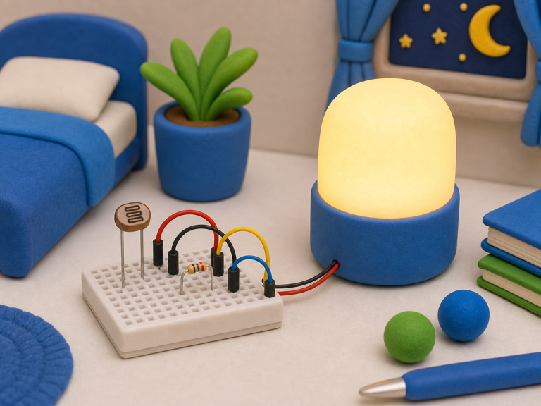
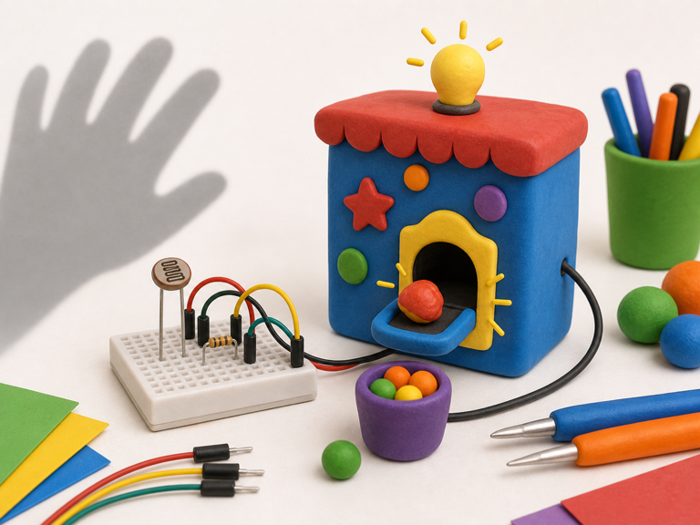

Night light
DetectRoom gets dark
->
DecideLight level is low
->
DoTurn lamp on
An LDR helps your project notice light and dark.
LDR stands for light-dependent resistor. Its reading changes when more or less light hits it.
Your projects can use an LDR to react to shadows, lamps, daylight, or secret hand waves.


from gpiozero import LightSensor
ldr = LightSensor(17)
light = ldr.light_detectedfrom machine import ADC
ldr = ADC(26)
light_level = ldr.read_u16()light or light_level when your project needs to react to light.